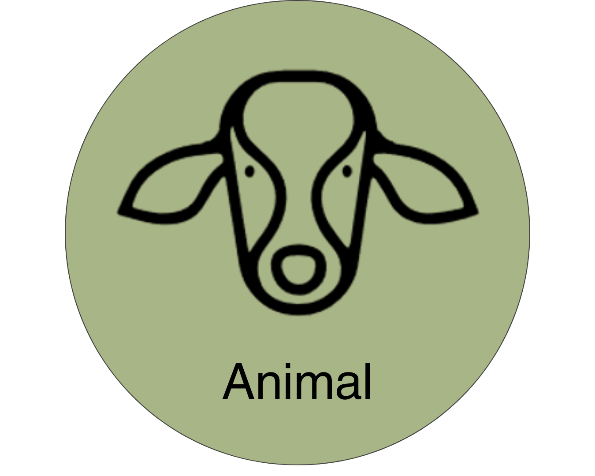

import sys
sys.path.append("../scripts")
from markdown_tables import import_table, display_md_tbl, read_tblExample quarto structures
Sectioning and Structure
There is some variation between modules and documentation bassed on structure and needs of the model. However there are some materials, or ingredients if you will, that will remain consistent between modules. These include: Module Header, module introduction, sections representing components of module, section introductions, methodologies, relevant inputs, and relevant outputs.
These should be referred to in a consistent manner throughout the document to inform tables of contents, indices, and auditing materials.
# Module Name
section title and only appears once
## Module Introduciton
subsection header
## Section Title
subsection header that introduces distinct portions of each module that
require separate methodological descriptions and equations
### Section Introduction
subsubsection header to introduce the concept
### Methodology
subsubsection header used to start descriptions
#### Required Inputs or Relevant Outputs
emphasized headers should be used to report the inputs and outputs of the
relevant subsection. These usually include tables and bulleted lists.
Within the text, you can refer to any function or variable within the RuFaS model with
`code` formatting (backticks).
*Alternate Headers* alternate headers may be used at the discretion of the author.There may be expanded uses for subsubsection headers and emphasized headers. The ones outlined above are only the expected uses. Feel free to use more at the discretion of the author.
Images, Figures, and Tables
Linking - Internal and External
This is an important feature of the scientific documentation. A document this large can be difficult to navigate, so anything that improves the users ability to find what they need efficiently should be optimized.
There are 3 main structures to “label” parts of the document:
* #sec (sections)
* #tbl (tables)
* #fig (figures)Naming is important for tracking and should appear with hyphens, not spaces. There is no formal process to inform how you name, but it is recommended that it is descriptive of the item you are labeling and it is concise to make referencing easier.
When you label anything, you must start with the structure type (sec, tbl, fig). Next you must indicate the 2 letter module abbreviate:
- an = Animal
- ma = Manure
- sc = Soil and Crop
- fe = Feed Storage
- em = Emissions
- ec = Economics
- cx = Connecting or Gray Documents
When uploading new images, screenshots, flowcharts or other image resources, the 3 letter abbreviations should be the LEADING part of the file name. The rest of the file name should be descriptive of the content of the image separated by underscores (_). If the image is used for a title page or representative of the larger model, the leading file name should be “rufas”.
Note
Files that include flow charts should indicate such in the file. For example, a flow chart of the decision tree in the animal module should be names “ani_flow_decision_tree”. Similarly, if the image is a screenshot of a section of code from the module, the file name should include ‘code’. For example, a code screenshot for the manure module should be named “man_code_description” or something similar.
Linking internally and externally is the first step, however it can be hard to keep track of labels and how they have been used and referenced. That is the main reason we have the auditing tool. If you are creating new labels or new reference links, be sure to check the auditor to make sure that there is no repeat labels or incorrect references
Example of a Figure
All figures and images must be uploaded in the “references.” When you upload your fig/img, you may name the file (best to keep it short and sweet)…
{#fig-animal-icon width=35%}
-->[Caption for the image or figure]
--> #fig-animal-icon = #indicates the type of file-label-for-auditing
--> width=35% = sizing adjusted as neededThe output is below :

Example of a Table
Generate Directly from a .csv File
This is the preferred method to generate a table because it is the most straightforward and requires the least amount of formatting. You can use the make_markdown_table function in the make_grid_table.py script to generate a markdown table from a .csv file. The .csv file should be formatted with the appropriate columns (Variable, Definition, Default, Min, Max) and should be saved in the resources/table_data folder. The name of your file should match the label used in the documentation. This will help with traceback and auditing.
Tables of inputs should include:
- Variable
- Definition
- Default
- Min
- Max
If there is no application for one of these (default, min, or max particularly), do not leave the table cell blank. Please include “–” or “NA” depending on what makes the most sense.
All tables begin with the “tbl-” prefix followed with the 3 letter acronym for the module where the table belongs (e.g. “ani” for animal). The final segments (also separated by hyphens) should be short but descriptive. For example, the table of abbreviations is labeled “tbl-abbrevs” (it is outside of any module so no module abbreviation is used) and the corresponding .csv file is named “tbl-abbrev.csv”.
The main adjustments you will need to make are the label, tbl-cap (caption), and the file name in the make_markdown_table function. The rest of the code can be copied and pasted as is.
If you are having trouble running this, be sure to check the sys.path.append location and the actual .csv file location.
import_table(
"../resources/table_data/tbl-an-example-struct.csv",
colalign = ["left", "left", "center", "center", "center"]
)| Variable | Definition | Default | Min | Max |
|---|---|---|---|---|
| id | The index of the pen | NA | 0 | NA |
| pen_name | The name or identifier of a given pen | NA | – | – |
| animal_combination | The valid combinations of animal types that can be in a pen. CALF = Calves; GROWING = HeiferI’s and HeiferII’s; CLOSE_UP = HeiferIII’s and Dry Cows; LAC_COWS = Lactating Cows | – | – | CALF, GROWING, CLOSE_UP, LAC_COWS |
to reference this table within the text (like this: Table 1), use @tbl-an-example-struct
Each time you create a new table, you need to update 3 things within this code block:
- label: this should match the label of the .csv file you are using. For example, if your .csv file is named “tbl-an-example-struct.csv”, then your label should be “tbl-an-example-struct”. This will help with traceback and auditing. (Every file and label name should start with ‘tbl’ and followed with the appropriate 2 letter module abbreviation if applicable).
- tbl-cap: this is the caption for your table. It should be descriptive of the content of the table and should be concise.
- file path: this is the location of your .csv file. It should be in the resources/table_data and then module folder before the name of the actual file. For example, if your file is named “tbl-an-example-struct.csv”, then your file path should be “../resources/table_data/animal/tbl-an-example-struct.csv”.
If you need more control over the alignment, you can use the colalign argument to specify the alignment of each column. The options are “left”, “center”, and “right”. You can also adjust the width of the columns by adding additional spaces in the .csv file.
To command cell size, add “maxcolwidths = [5, 20, 5, 5]” (adjusting values as needed) below the colalign argument. The number in the list corresponds to the column number (starting from 0) and the value is the maximum width of that column in characters. If you want to allow the column to expand as needed, you can set the value to None.
Equation Templates and ID Logic
If you are adding equations, it is important that you continue to use the ID logic that has been described.
The audit label and crosslinking is tracked by #eq-an-nrc-2026. It is important to follow the custom label structure even for the invisible reference to make tracking easier.
All letters or acronyms included in equations should be within the \text{} function to ensure consistent formatting and avoid stray italices.
Multiplication may be indicated with a \times.
:::{#eq-an-nrc-2026}
[[**AN.NRC.2026**]]{.aside .content-visible when-format="html"}
$$
\text{CBW} = \text{MW} \times 0.06275
$$
:::
Below is how the equation can be linked in other parts of the text:
See [AN.NRC.2026](#eq-an-nrc-2026)This is how your equation and the linking should appear.
\[ \text{CBW} = \text{MW} \times 0.06275 \]
[AN.NRC.2026]
See AN.NRC.2026
Some equations may be too long to fit on a single line and within the margins. Unfortunately, you will need to manually break the equation into multiple lines.
To do this, you can use the function to create a break in the equation. Be sure to use the function for all variables and text to ensure consistent formatting throughout the document.
$$
\begin{aligned}
\text{fecal\_water} &= (1.987 \times \text{dry\_matter\_intake}) \\[8pt]
&\qquad + (0.348 \times \text{acid\_detergent\_fiber\_concentrations}) \\[8pt]
&\qquad - (0.412 \times \text{crude\_protein\_concentration}) \\[8pt]
&\qquad - (0.074 \times \text{dry\_matter\_concentration}) \\[8pt]
&\qquad - (0.0057 \times \text{days\_in\_milk})
\end{aligned}
$$\[ \begin{aligned} \text{fecal\_water} &= (1.987 \times \text{dry\_matter\_intake}) \\[8pt] &\qquad + (0.348 \times \text{acid\_detergent\_fiber\_concentrations}) \\[8pt] &\qquad - (0.412 \times \text{crude\_protein\_concentration}) \\[8pt] &\qquad - (0.074 \times \text{dry\_matter\_concentration}) \\[8pt] &\qquad - (0.0057 \times \text{days\_in\_milk}) \end{aligned} \]
Callouts, Recommendations, or Notes
You may want to emphasize specific notes and annotations. Here is a helpful tool to do so correctly.
::: {.callout-note}
Callout text goes here.
:::Your callout will appear the way it does below:
Note
Callout text goes here.
References
Before adding a new reference to “rufas.bib,” check the file to ensure it has not already been added. All references should be listed alphabetically and then by year (most recent at the top).
If you do need to add a bibliography, the correct structure is below. Pay special attention to the green text, this formatting is important to maintain consistentcy because it helps us with our auditing report and allows us to properly cite in-text.
Journal Articles
@article{lastnameYEAR,
author = {Lastname, Firstinitial.},
title = {Title of the article in proper formatting},
journal = {Journal Title with proper NCBI Abbreviations},
year = {YEAR PUBLISHED},
volume = {VOLUME NUMBER},
pages = {PAGES}
}
Books
@book{lastnameYEAR,
author = {Lastname, Firstinitial.},
title = {Title of Book Referenced},
publisher = {Publisher},
year = {YEAR PUBLISHED},
isbn = {978-3-319-24277-4}
}
Online, Misc, Website (RARE USAGE)
@online{quarto2024,
author = {Posit},
title = {Quarto Citations Guide},
year = {2024},
url = {https://quarto.org/docs/authoring/citations.html}
}If there are 2 articles with the same author and same year, add the recommended “a” or “b” (e.g. bibtex @lastnameYEARa vs @lastnameYEARb) as they are referenced.
Previews and Audits
For preview html
```{markdown}
quarto preview
```For audit review You can find the output in resources > reference-audit folder.
```{markdown}
python quarto_audit.py
```import_table(
"../resources/table_data/tbl-audit-key.csv",
colalign = ["left", "left", "left", "left", "left"]
)quarto_audit.py script and is located in the resources > reference-audit folder. The audit report is a tool to help us keep track of our references, labels, and crosslinking throughout the document. It is important to check this report regularly to ensure that there are no duplicate labels or incorrect references.
| Type | Metric | Meaning |
|---|---|---|
| Summary | project_root | Folder scanned |
| qmd_files_scanned | Number of markdown/quarto files scanned | |
| bib_files_scanned | Number of .bib files scanned | |
| labels_found | Total labels discovered | |
| label_references_found | Total references to labels | |
| duplicate_label_groups | Number of duplicated IDs | |
| missing_label_reference_rows | References pointing to missing labels | |
| unused_label_rows | Labels never referenced | |
| bib_entries_found | Total bibliography entries | |
| bib_citations_found | Total @citation usages |
|
| duplicate_bib_key_groups | Duplicate BibTeX keys | |
| missing_bib_citation_rows | Citations missing from bibliography | |
| missing_declared_bib_files | Missing .bib files declared in YAML | |
| hyperlinks_found | Total hyperlinks | |
| broken_internal_links | Broken local file links | |
| equations_found | Quarto equation blocks found | |
| missing_equation_custom_ids | Equations missing visible IDs | |
| equation_id_mismatches | Equation IDs not matching expected naming | |
| duplicate_equation_custom_groups | Duplicate custom equation IDs | |
| all_labels | label | Actual ID |
| type | Figure/Table/Equation/etc | |
| file | File location | |
| line | Line number | |
| source | Attribute block or cell label | |
| context | Nearby text | |
| all_label_refs | example use: @fig-animal See [Equation](#eq-an-nrc-2) |
Tracks where labels are used (e.g. missing references, unused labels) |
| duplicate_labels | {#fig-results} |
Every duplicated label occurrence (e.g. pdf linking and html anchors tracked) |
| duplicate_label_groups | – | Condensed summary of duplicate labels to expedite clean up |
| missing_label_refs | – | References pointing to labels that do not exist. |
| unused_labels | – | Labels that exist but are never referenced. These may not necessarily be ‘errors’ but could be helpful if cleaning up ‘dead’ content or unused figures. |
| bib_entries | – | All BibTeX entries found and reporting the name (bib_key), type of reference, file, and line. |
| bib_citations | – | Every citation usage. |
| duplicate_bib_keys | – | Duplicate citation keys in .bib files. |
| duplicate_bib_groups | – | Condensed duplicate bibliography summary. |
| missing_bib_cites | – | Citations used in markdown but missing from bibliography. |
| missing_bib_files | – | Bibliography files declared in YAML that do not exist. This may be more helpful in the future if more than one .bib file is being used |
| hyperlinks | – | All hyperlinks discovered. |
| external_links | – | Only external links. |
| internal_links | – | Links to local files. |
| anchor_links | – | Links to anchors. |
| other_links | – | Links that do not fit known categories. |
| broken_internal_links | – | Internal file links whose target file does not exist. |
| equations | – | Registry of detected equation blocks. This tracks equation ID, visible customized ID, expected ID and determines if they match. |
| missing_eq_custom_ids | – | Equations that are missing visible custom IDs (even if they have their hidden one). |
| equation_id_mismatches | – | Visible equation ID does not match expected label-derived ID. |
| dup_eq_custom_ids | – | Duplicate visible equation IDs. |
| dup_eq_custom_groups | – | Condensed summary of duplicate equation IDs. |